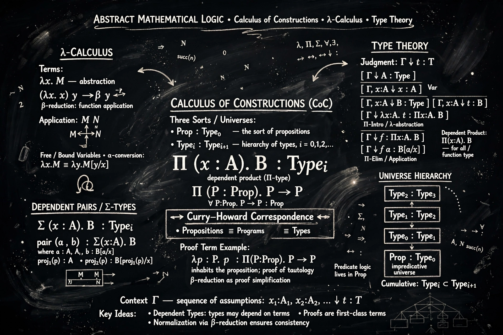

The calculus of constructions (CoC) is a typed lambda calculus developed by Thierry Coquand and Gérard Huet in the 1980s. It is a higher-order dependently typed system that serves as both a programming language and a foundation for constructive mathematics, sitting at the top corner of Barendregt's lambda cube.

The CoC allows terms, types and kinds in a unified framework with dependent products: functions may take types as arguments, return types, and have types that depend on values. Under the Curry–Howard correspondence, propositions are types and proofs are programs, enabling machine-checked proofs.
Adding inductive types gives the calculus of inductive constructions, the basis of the Coq (now Rocq) proof assistant used to formalise results such as the four-colour theorem and the Feit–Thompson theorem. The system is strongly normalising, so every well-typed proof terminates. See Lambda calculus and Dependent type.